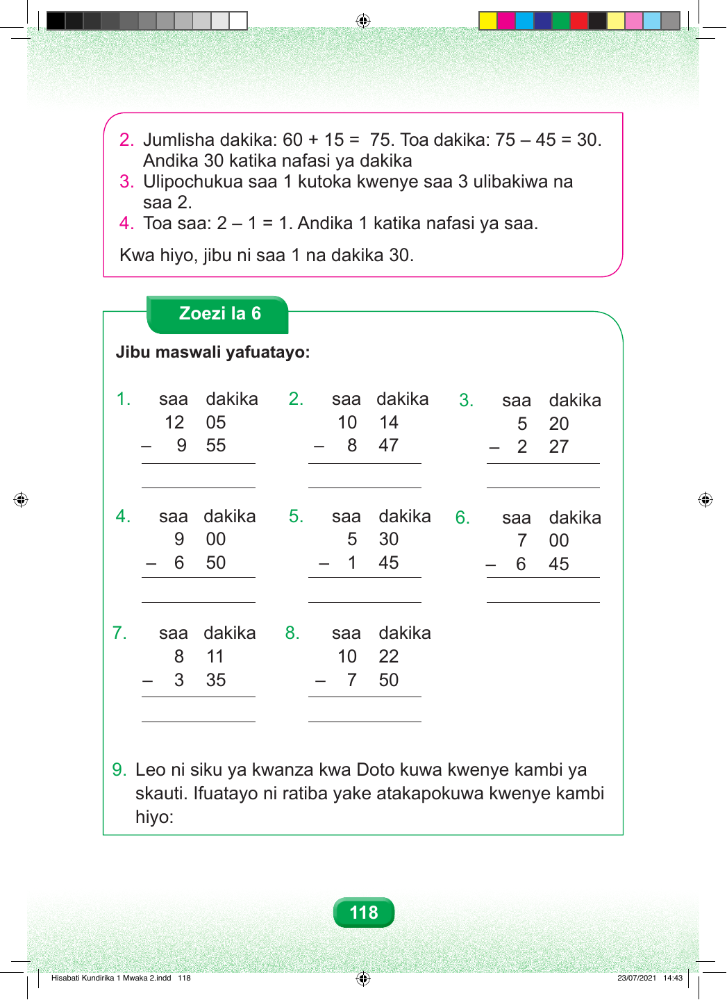

Hatua ya pili. Jumlisha dakika sitini na dakika kumi na tano; unapata dakika sabini na tano. Toa dakika arobaini na tano. Sabini na tano kutoa arobaini na tano, sawa sawa na thelathini. Andika dakika thelathini. Hatua ya tatu. Ulipochukua saa moja kutoka saa tatu, zilibaki saa mbili. Hatua ya nne. Toa saa: mbili kutoa moja, sawa sawa na moja. Andika saa moja. Kwa hiyo, jibu ni saa moja na dakika thelathini. Zoezi la Sita Jibu maswali yafuatayo. Swali namba moja. Saa kumi na mbili na dakika tano, kutoa saa tisa na dakika hamsini na tano. Swali namba mbili. Saa kumi na dakika kumi na nne, kutoa saa nane na dakika arobaini na saba. Swali namba tatu. Saa tano na dakika ishirini, kutoa saa mbili na dakika ishirini na saba. Swali namba nne. Saa tisa na dakika sifuri, kutoa saa sita na dakika hamsini. Swali namba tano. Saa tano na dakika thelathini, kutoa saa moja na dakika arobaini na tano. Swali namba sita. Saa saba na dakika sifuri, kutoa saa sita na dakika arobaini na tano. Swali namba saba. Saa nane na dakika kumi na moja, kutoa saa tatu na dakika thelathini na tano. Swali namba nane. Saa kumi na dakika ishirini na mbili, kutoa saa saba na dakika hamsini. Swali namba tisa. Leo ni siku ya kwanza kwa Doto kuwa kwenye kambi ya skauti. Ratiba yake inaonekana katika jedwali la ukurasa unaofuata. Hisabati Kundirika 1 Mwaka 2.indd 118 23/07/2021 14:43